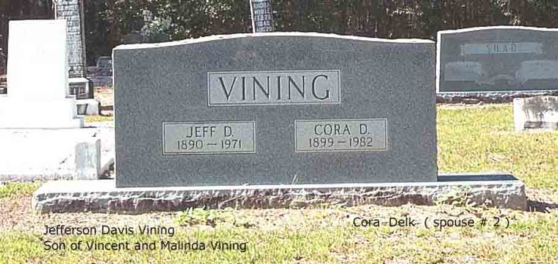
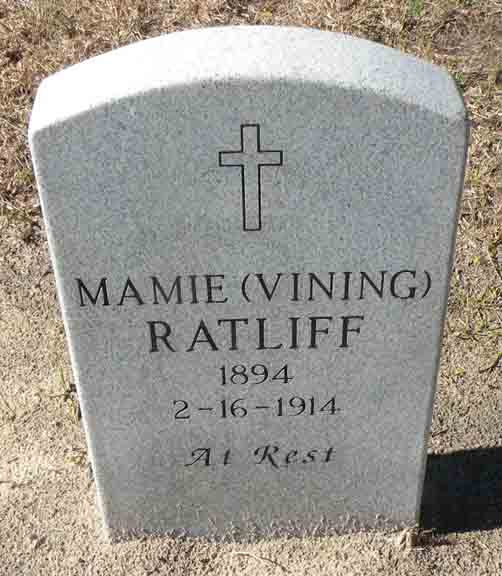

Census Data
| 1920 | 1930 | 1940 | |
| Jefferson Davis Vining | 29 | 40 | 50 |
| Mamie (Ratliff) Vining | dead | ||
| Cora (Delk) Vining | 21 | 35 | 41 |
| George Vinson Vining | 5 | 15 | 26 [see note below] |
| Myrtice Vining | 3 y., 2 m. | 12 | living in separate household |
| child Vining | dead |


Death Data
Headstone for Jefferson Davis Vining and second wife Cora (Delk) Vining, in Mount Zion Cemetery, Axson, Atkinson County, Georgia (from Find A Grave):
